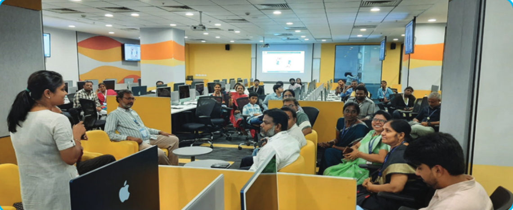
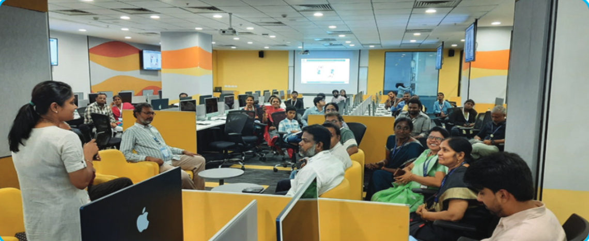

Date: 04.10.2024
Convener: Dr. M.Lakshmi, Professor & Head, NWC
Co-Conveners: Dr. Saranya G, Assistant Professor, NWC; Dr. Savaridassan P, Assistant Professor, NWC
Resource Person: Mr. Umansh Agarwal, Senior Analyst (SOAR Operations), EY India LLP.
Event Summary: The placement talk aimed to equip students with essential skills and knowledge for a smooth transition into the workforce. The session emphasized career planning, networking, and balancing technical and soft skills to excel in today's job market.
Date: 10.10.2024
Convener: Dr. M.Lakshmi, Professor & Head, NWC
Coordinators: Dr. Abinaya G, Assistant Professor, NWC; Dr. Vinothkumar C. N.S, Associate Professor, NWC
Resource Person: Ms. Ponnu Sharma, Senior Cybersecurity Analyst at Eltropy
Event Summary: The talk provided insights into networking roles, essential skills, and certifications. It explored career paths like Network Engineer, Cybersecurity Analyst, and Network Consultant, emphasizing networking’s importance in an interconnected world.
Date: 24.10.2024
Convener: Dr. M.Lakshmi, Professor & Head, NWC; Dr. G.Suseela, Associate Professor, NWC
Resource Person: Mr. Aditya, Project Manager and Service Delivery Manager, Tata Consultancy Services
Event Summary: The session covered Aptitude Tests, Resume Building, and Interview Preparation. Key topics included time management, Data Structures & Algorithms, and crafting impactful resumes, with insights on Generative AI’s role in hiring.
Date: 07.11.2024
Convener: Dr. M.Lakshmi, Professor & Head, NWC
Resource Person: Ms. Manubhav Sharma Threat Analyst, Sophos Pvt Ltd
Event Summary: A Career Talk titled “From Hackers to Heroes: Careers in Cybersecurity” was held on 7th November 2024 to inspire and guide students preparing for placements. The session focused on the evolving field of cybersecurity, highlighting the critical role of ethical hackers and cybersecurity professionals in protecting digital ecosystems. The speaker emphasized the growing demand for skilled professionals in the industry and how cybersecurity has transitioned from being a niche domain to a mainstream and indispensable career choice. Students were encouraged to evaluate their current skill sets and identify areas for improvement. This interactive and engaging session motivated students to align their career aspirations with the dynamic and challenging world of cybersecurity
Date: 21.12.2024
Time: 2:00 PM
Convener: Dr. M.Lakshmi, Professor & Head, NWC
Coordinators: Dr. K. Venkatesh, Associate Professor, NWC; Dr. J. Godwin Ponsam, Associate Professor, NWC
Chief Guest: Dr. Revathi Venkataraman, Chairperson, School of Computing
Event Summary: The Alumni Reunion event brought together over 25 alumni, faculty members, and students, including international attendees. The event received enthusiastic feedback, with alumni expressing appreciation and a desire for more gatherings.
 

The outreach event ‘Building Bonds: A Day of Care and Compassion’ for the NSS Outreach Program had a positive impact, bringing together students and staff within the Department of Networking and Communications. By introducing the program’s initiatives, teaching activities, and fun sessions led by students and faculty, the event set the stage for future outreach activities. Students left with a clearer understanding of the program’s goals and how they could get involved, sparking their enthusiasm and interest. The emphasis on teamwork, community engagement, and social responsibility motivated everyone, setting the tone for an exciting and productive year ahead.
Date: 14.10.2024
Professional body: Prema Vasam, Gerugambakkam
Conveners:
Co-Conveners:
Organising Committee:
An outreach activity titled ‘Unnath Bharath Abhiyan Baseline Household Survey’ was conducted to assess the utilization of government schemes and the availability of basic amenities among residents. The survey, organized under the Unnath Bharath Abhiyan initiative, took place in the streets of Singaperumal Koil on 23.10.2024, with active participation from students. This activity provided valuable insights into the needs and challenges of the local community while fostering awareness among students about social issues.
Date: 23.10.2024
Venue: Singaperumal Koil Streets
Professional body: Unnath Bharath Abhiyan
Duration: 9.00 AM to 1.00 PM
Conveners:
An outreach activity on ‘Organic Waste Management through Vermicomposting’ was organized on 8th November 2024 by Dr. Naga Malleswari T Y J and Dr. Ushasukhanya S, faculty members from the Department of Networking and Communications, at the Urban Farm Center with the active participation of NSS students. The session aimed to educate students on the process and benefits of vermicomposting. Mrs. C. Kanimozhi, a faculty member from the Department of Agriculture, shared insights into innovative agricultural projects and explained the fundamentals of vermicomposting, including the role of essential nutrients and the importance of beneficial microorganisms. The discussion highlighted the benefits of vermicomposting, such as improved soil fertility, enhanced crop yields, and overall better plant growth, fostering a deeper understanding of sustainable waste management practices among the students.
Date: 08.11.2024
Venue: Urban Farm Center
Duration: 8.00 AM to 9.40 AM
Conveners:
Resource Person:
An outreach activity on ‘Road Safety - Helmet Awareness’ was organized by Dr. Naga Malleswari T Y J and Dr. Ushasukhanya S, faculty members from the Department of Networking and Communications at SRM Institute of Science and Technology (SRMIST). As part of this initiative, a rally on “Road Safety - Helmet Awareness” was conducted on 18th November 2024, with enthusiastic participation from NSS students. The rally began at Ganesh Temple and proceeded to the Medical College, spreading awareness about the importance of wearing helmets and adhering to road safety guidelines. This activity served as an educational platform for students, emphasizing the critical role of helmets in preventing injuries and promoting responsible behavior on the roads.
Date: 18.11.2024
Venue: Rally at SRMIST, KTR
Duration: 8.00 AM to 9.40 AM
Conveners:
An outreach activity focusing on ‘Gender Equality’ was organized by Dr. Naga Malleswari T Y J and Dr. Ushasukhanya S, faculty members from the Department of Networking and Communications, in collaboration with the Department of ECE at SRM Institute of Science and Technology (SRMIST). As part of the initiative, a rally on “Gender Equality” was conducted on 25th November 2024, with the active participation of NSS students. The rally commenced at the Tech Park, proceeded to the Medical College, continued to the University Building, and concluded back at the Tech Park. This event provided an opportunity for students to gain valuable insights into the importance of gender equality and foster awareness about this crucial social issue.
Date: 25.11.2024
Venue: Rally at SRMIST, KTR
Duration: 8.00 AM to 9.40 AM
Conveners:
The primary objective of the counselling cell event ‘Mindful Living: Psychology for a Purposeful Life’ is to incorporate mindfulness techniques to lower stress levels and enhance both mental and physical health. By developing mindfulness, participants learn to manage and reduce stress levels through awareness of the present moment, breaking habitual stress reactions.
Date: 22.10.2024
Duration: 10:00 AM
Convener:
Coordinators:
Resource Person:
The workshop on the Industry Professional Elective Course 21CSE315P: Data Orchestration and Management in Cloud Ecosystems aimed to equip participants with practical expertise in managing and orchestrating data within cloud environments. The session provided hands-on experience with key tools such as Hadoop, Apache Spark, and AWS services, empowering students to effectively process, analyze, and manage large-scale data in the cloud. Participants gained valuable insights and skills to handle complex data operations and optimize performance in cloud ecosystems.
Date: 25.09.2024 to 01.10.2024
Duration: 6 days
Convener: Dr. S. Prabakaran, Associate Professor, NWC
Resource Person: Mr. S. B. Gowtham, Data Engineer at PayPal
The ‘Kodekshetra’ coding standards workshop concluded successfully, leaving participants equipped with practical knowledge of industry-standard practices. Through a mix of lectures and hands-on exercises, attendees gained insights into essential coding conventions and best practices that enhance code readability, maintainability, and collaboration within development teams. The workshop covered various language-specific standards, including PEP 8 for Python and Google’s guidelines for C++, alongside tools like linters and code formatters that automate adherence to these standards. Feedback from participants highlighted an appreciation for the interactive approach and real-world examples, which helped them better understand the impact of coding standards on project quality and team efficiency. Overall, the event was a valuable step toward fostering a culture of code quality and consistency.
Date: 07.10.2024
Venue: Online
Duration: 10 AM to 12 PM
Conveners:
Dr. Lakshmi M, Professor & Head NWC
Co-Conveners:Dr. Venkatesh K
Associate Professor Nwc
Dr.Sujatha G
Associate Professor,Nwc
The two-day workshop on ‘Unity and Unreal Engine’ introduced the Deep Learning in Gaming and Application, participants to the gaming platforms,
a powerful tool for creating 2D and 3D games. It covered essential features like asset management, scripting, and user interface design,
helping attendees build interactive game experiences. The sessions were hands-on, allowing students to develop their own game prototypes. Unity’s robust
developer community, ease of use, multi-platform compatibility, and robust development tools have made it an excellent choice for game production. Its
affordability, compatibility for virtual reality, and AR make it a popular option for game makers. Among the many improvements and new features in Unreal
Engine 5 are Lumen, a dynamic global illumination and reflection system that uses both hardware-accelerated ray tracing and software, and Nanite, a
system that automatically modifies the meshes’ degree of detail.
Date: 8.10.2024 and 9.10.2024
Duration: 2 days
Conveners: Dr. K. Arthi, Associate Professor, DSBS, SRMIST; Dr. K. Deepa Thilak, Associate Professor,
NWC, SRMIST; Dr. K. Kalaiselvi, Associate Professor, NWC, SRMIST
Resource Person: Mr. Ashokkumar Manisekaran, Founder, Praya Labs
On 10th October 2024, the Department of Networking and Communications at SRM Institute of Science and Technology organized a vibrant Ayudha Pooja celebration. The event was held in TP414 & TP415 of the Tech Park Building and started at 3:00 PM. Ayudha Pooja is a traditional ritual that honors tools, instruments, and knowledge, signifying gratitude for their role in our success and well-being. Faculty, staff, and students actively participated in the event, where prayers were offered to Goddess Saraswati, the symbol of wisdom and learning, to seek blessings for a successful academic and professional journey. The atmosphere was a spiritual connection, cultural pride, and community bonding. The pooja was followed by distributing prasadam to all attendees, further enhancing the sense of togetherness. The event successfully blended tradition with modern academic life, providing a moment of reflection and gratitude. It left participants with renewed purpose and energy as they continued their academic pursuits.
Date: 10.10.2024
Time: 3:00 PM
Conveners: Dr. Nimala K, Associate Professor, NWC; Dr. Arun A, Assistant Professor, NWC
Festive Guest: Dr. M. Pushpalatha, Associate Chairperson, CTech; Dr. S. Niranjana, Professor & Head, CTech
The “Stress-Free Living Workshop” was held on October 22, 2024, at the TP405 Techpark Building, SRM Institute of Science and Technology. The event aimed to educate participants on managing stress through a combination of informative lectures and interactive activities. The session began with a lecture discussing the nature of stress and effective management techniques, such as mindfulness and healthy lifestyle choices. Participants then engaged in a creative painting activity, which encouraged emotional expression in a relaxing environment. The workshop culminated in a balloon game, where attendees wrote their stressors on balloons and burst them together, symbolizing the release of their worries. Overall, the workshop provided valuable insights into stress management while fostering a supportive community atmosphere, leaving participants feeling empowered and connected.
Date: 22.10.2024
Conveners: Dr. Nimala K, Associate Professor, NWC; Dr. Arun A, Assistant Professor, NWC
Resource Person: Dr. Ragitha Radhakrishnan, HoD, Psychology, Dr. MGR Janaki College
The seminar ‘Study Abroad Programme’ provided students with in-depth insights into key exams like GRE, GMAT, IELTS, PTE, and TOEFL, as well as the study abroad admissions process and global opportunities. Participants were guided through every stage of the study abroad journey, with detailed information on country-specific requirements, exam criteria, and course options tailored to their educational backgrounds. The seminar also addressed job assistance available post-graduation, ensuring students were equipped to make informed decisions that would enhance their career growth and future prospects.
Date: 04.11.2024
Time: 11:00 AM to 12:30 PM
Conveners: Dr. C. N. S. Vinoth Kumar, Associate Professor, NWC
Co-Conveners: Dr. A. Vijay Vasanth, Assistant Professor, NWC; Dr. B. Balakiruthiga, Assistant Professor, NWC
Resource Person: Mr. H. Abdul Navas, Business Development Manager, Osprey Academy
The Project Expo was successfully held on November 5, 2024, at 3:00 PM in TP 413, Intel Unnati IoT Solutions Lab. Students enthusiastically presented their projects, showcasing detailed posters, functional prototypes, and live demonstrations on their laptops. The projects were evaluated by Dr. M. Lakshmi, Professor and Head – NWC, and Dr. M. Thenmozhi, Professor – NWC, who provided insightful feedback and valuable suggestions to help students refine their ideas and explore pathways toward product commercialization. The event concluded with the announcement of the winners, followed by the distribution of certificates, celebrating the hard work and innovation of all participants.
Date: 05.11.2024
Time: 3:00 PM to 5:00 PM
Conveners: Dr. M. Lakshmi, Professor & Head, NWC, SRMIST
Coordinators: Dr. T. Y. J. Naga Malleswari, Associate Professor, NWC, SRMIST; Dr. S. Ushasukhanya, Associate Professor, NWC, SRMIST
Chief Guest: Dr. Revathi Venkataraman, Professor & Chairperson, School of Computing, SRMIST
The Serbot Tech Expo, organized under the course Serbot: Project-Based Learning in Robotics, was a dynamic event highlighting innovative student projects. Students presented hands-on robotics and automation solutions, showcasing their creativity, technical skills, and teamwork. The event drew significant participation from academia and industry, fostering valuable interactions and insights. Attendees explored a range of applications, from AI-driven systems to advanced automation prototypes. The expo successfully bridged academic learning with industry relevance, inspiring further exploration in the field of robotics and automation.
Date: 06.11.2024
Conveners and Co-Conveners: Dr. M. Lakshmi, Professor & Head, NWC; Dr. Annapurani K, Professor, NWC; Dr. A. Suresh, Associate Professor, NWC
Coordinators: Dr. R. Kayalvizhi, Associate Professor, NWC; Dr. K. A. Varunkumar, Assistant Professor, NWC
Resource Person: Dr. V. Mohanraj, Senior Data Engineer, Standard Chartered
The workshop on Cyberbullying among Indian Youth and Protecting Their Mobile Devices aimed to raise awareness and provide practical solutions for addressing the growing issue of cyberbullying. Participants gained a deeper understanding of the prevalence of cyberbullying and its emotional, social, and academic impacts on youth. They were introduced to essential digital literacy skills, including how to secure mobile devices through privacy settings, strong passwords, and anti-cyberbullying apps.
The workshop also educated attendees on effective reporting mechanisms, empowering youth to identify and report cyberbullying incidents. It fostered a sense of community by encouraging open discussions and peer support networks to combat bullying. Parental insights were provided into monitoring online activity and offering balanced support to children. Additionally, the workshop highlighted the importance of policy advocacy, calling for stricter regulations and school policies to address cyberbullying. Overall, participants left with actionable steps to create a safer, more respectful online environment, ensuring a lasting impact on both individuals and communities.
Date: 07.11.2024
Time: 10:30 AM to 12:30 PM
Conveners and Co-Conveners: Dr. M. Lakshmi, Professor & Head, NWC, SRMIST; Dr. M. B. Mukesh Krishnan, Professor, NWC, SRMIST
Coordinators: Dr. K. A. Varunkumar, Assistant Professor, NWC
Professional Body: Ministry of Home Affair’s initiative Cyber Jagrukta Divas
Resource Person: Dr. Madhulika Sahoo, Director – Student Welfare and Placement, Kalahandi University, Government of Odisha
The event showcased the cutting-edge applications of deep learning in the gaming industry, highlighting how AI is revolutionizing game development. Presentations covered topics like NPC behavior modeling, dynamic content generation, and real-time player adaptation. The experts shared insights into how deep learning can create more immersive, personalized gaming experiences.
Attendees explored the role of neural networks in designing smarter game mechanics and dynamic environments. The expo also demonstrated how AI can improve game performance, making it more responsive to player actions. Keynote speakers discussed future trends, including the potential of reinforcement learning in gameplay optimization. Developers presented real-world case studies on the implementation of AI in both game design and player interactions. Overall, the event emphasized the transformative impact of deep learning technologies on the future of gaming.
Date: 08.11.2024
Conveners: Dr. Annapurani Panaiyappan. K, Professor, NWC; Dr. K. Arthi, Associate Professor, DSBS
Resource Person: Dr. Bhasi Sukumaran, Professor & Head of the Department, Clinical Psychology, SRM Hospitals
The Hackathon ‘Semicolon 10.0’ provided a dynamic platform for participants to showcase their technical skills, creativity, and teamwork while developing innovative solutions within a set timeframe. The event fostered an atmosphere of learning, healthy competition, and collaboration, motivating participants to challenge their limits and think outside the box.
It concluded with the recognition of outstanding performers, celebrating their achievements and inspiring a spirit of innovation and community among all participants. The hackathon not only highlighted technical excellence but also reinforced the importance of teamwork and creative problem-solving.
Date: 11.11.2024
Convener: Dr. M. Lakshmi, Professor & Head, NWC
Co-Conveners: Dr. M. Safa, Assistant Professor, NWC; Dr. G. Saranya, Assistant Professor, NWC; Dr. K. Meenakshi, Assistant Professor, NWC; Dr. S. Murugaanandam, Associate Professor, NWC
Resource Person: Mr. K. Ramesh, IIC Convener, Directorate of Entrepreneurship & Innovation (DEI)
The Malware Analysis Workshop provided participants with hands-on experience in detecting, analyzing, and mitigating malicious software. Held at the IoT Lab Tech Park 1 (4th Floor), the session covered key topics like reverse engineering, behavioral analysis, and threat detection using industry-standard tools such as debuggers, disassemblers, and sandbox environments.
Participants analyzed real-world malware samples, gaining practical skills to identify and mitigate cyber threats. The workshop successfully equipped attendees with the knowledge and tools needed to enhance their cybersecurity expertise and tackle real-world challenges effectively.
Date: 11.11.2024 to 12.11.2024
Conveners: Dr. M. Lakshmi, Professor & Head, NWC, SRMIST; Dr. M.B.Mukesh Krishnan, Professor, NWC, SRMIST
Coordinators: Dr. M. Sundarrajan, Assistant Professor, NWC; Dr. T. Balachander, Assistant Professor, NWC; Dr. G. Sujatha, Assistant Professor, NWC; Dr. V. Joseph Raymond, Assistant Professor, NWC; Dr. R. Lakshminarayanan, Assistant Professor, NWC
Resource Person: Mr. S. Dayanandhan, Accenture Solution Pvt Ltd, Coimbatore.
The School of Computing organized a Project Expo on 14th November 2024 for the subject 21CSS201T - Computer Organization and Architecture, a core subject common to all departments within the school. With a total of 89 sections across various departments, students first presented their projects at the departmental level, where the best teams were selected for the final exhibition.
After rigorous evaluation, 36 teams were chosen to showcase their innovative projects at the Project Expo. This event provided students with a platform to demonstrate their technical skills and creativity, and it witnessed active participation from students who exhibited their understanding of computer architecture and organization through practical applications.
The expo not only highlighted the students’ efforts but also encouraged a spirit of innovation and collaborative learning.
Date: 14.11.2024
Convener: Dr. M. Lakshmi, Professor & Head, NWC
Co-Conveners: Dr. C. Malathy, Professor, NWC; Dr. N. Senthamarai, Assistant Professor, NWC
Resource Persons: Mr. Prem Sasi Kumar, Senior Associate, PWC; Mr. Sarathy Ranganathan, Senior Software Developer, Accenture
Convener:
Dr. L.N.B. Srinivas, Associate Professor, NWC
Dr. R.Lakshminarayanan, Associate Professor,
NWC
Dr. V.Nallarasan, Assistant Professor, NWC
Mr. V.Arumugam, Senior System Administrator
Resource Person:
Dr. B. Yamini, Associate Professor, NWC
Dr. P. Savaridassan, Assistant Professor, NWC
Mr. N. Murugan, Programmer, NWC
Mr. D. Mohanraj, Programmer, NWC
Event Summary : Resource Person: Dr. B. Yamini, Associate Professor, NWC Dr. P. Savaridassan, Assistant Professor, NWC Mr. N. Murugan, Programmer, NWC Mr. D. Mohanraj, Programmer, NWC The Two-Day Skill-Building Training Programme was successfully inaugurated on December 16, 2024, at 9:30 AM. The Convener warmly welcomed the participants and provided an overview of the topics to be covered over the two days. The programme was officially inaugurated by Dr. M. Lakshmi, Professor and Head of the NWC Department, who encouraged participants to actively engage and make the most of this learning opportunity. Designed to enhance professional productivity, the training focused on practical applications of essential digital tools, including Adobe Photoshop, MS Excel, and MS PowerPoint. The sessions catered to all proficiency levels, guiding participants from beginner to advanced techniques. The programme concluded with a valedictory session on December 17, 2024, at 4:00 PM, where the Convener delivered the vote of thanks, appreciating the active participation and enthusiasm of all attendees